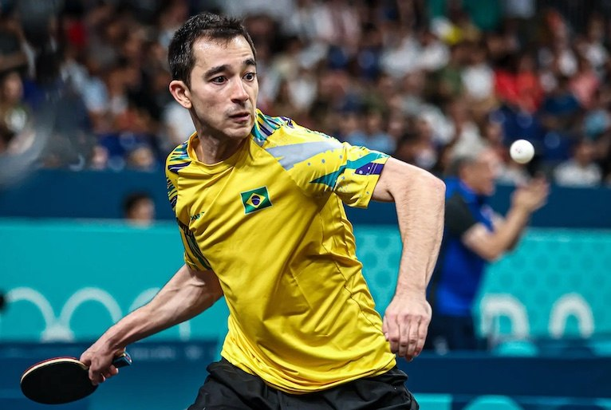

Caldeirano e seu Grande Talento

Hugo Calderano é um dos maiores talentos do tênis de mesa mundial, sendo uma referência no esporte, não apenas no Brasil, mas em todo o cenário internacional. Seu talento é inegável, marcado por uma habilidade técnica refinada e uma capacidade de adaptação que o coloca entre os melhores atletas da modalidade. Desde jovem, Calderano já demonstrava uma facilidade natural para o esporte, com uma agilidade impressionante e uma precisão nos movimentos que o destacavam dos demais competidores.
Sua leitura de jogo é outro fator que realça seu talento. Ele consegue prever os movimentos dos adversários com uma rapidez e clareza que lhe permite reagir de forma eficiente e criativa, tornando seus confrontos verdadeiros espetáculos de estratégia e técnica. Além disso, o equilíbrio entre força e sutileza em seus golpes revela uma maturidade incomum, algo que muitos outros jogadores demoram anos para alcançar.
O talento de Calderano também se revela na sua capacidade de lidar com pressão em grandes competições. Ele tem a habilidade de manter a calma e foco, mesmo nos momentos mais críticos, conseguindo converter essa pressão em resultados positivos. Isso é fruto não apenas de sua preparação física e mental, mas também de um talento natural que lhe permite brilhar em palcos de alta exigência.
A maneira como Hugo evoluiu ao longo de sua carreira, sempre se reinventando e buscando aperfeiçoar seu jogo, é mais uma prova de seu talento excepcional. Ele não se contenta com o status atual, mas está sempre em busca de elevar seu nível, o que o torna um atleta admirável e uma inspiração para muitos jovens jogadores.
Em uma partida memorável contra o chinês Fan Zhendong, então número um do mundo, Hugo Calderano mostrou que seu talento era um diferencial incontestável. Desde o início, ficou claro que o brasileiro não estava ali apenas para competir, mas para vencer, mesmo diante de um adversário renomado e temido. Fan Zhendong, com sua fama de jogador implacável, atacava com força e precisão, mas Hugo, com uma calma surpreendente, soube responder à altura.
O que fez Calderano se destacar naquele confronto não foi apenas sua técnica, mas sua capacidade de ler o jogo de uma forma que poucos conseguem. Ele antecipava os movimentos de Zhendong com uma precisão quase intuitiva, neutralizando ataques que normalmente seriam indefensáveis. Mais do que agilidade, Hugo demonstrava um controle absoluto da mesa, jogando com inteligência e paciência, esperando o momento certo para contra-atacar. Em várias ocasiões, Zhendong forçava Hugo ao limite, mas o brasileiro, com uma frieza e talento inegáveis, respondia com jogadas impressionantes que deixavam a plateia em êxtase.
O talento de Calderano se manifestou especialmente nos momentos mais críticos da partida. Quando Zhendong parecia ter retomado o controle, Hugo soube variar seu jogo, alternando entre ataques agressivos e defensivas quase impenetráveis. Essa capacidade de adaptação, de não se abalar diante da pressão, mostrou a superioridade do brasileiro em termos de talento puro. No final, foi essa combinação de habilidade técnica, leitura de jogo e resiliência que permitiu a Hugo vencer a partida, superando um adversário teoricamente superior, mas que não conseguiu igualar o talento natural e a inteligência de Calderano na mesa.

Arthur Vieira 2024 - ©Todos os direitos reservados
Trabalho academico sem fins lucrativos